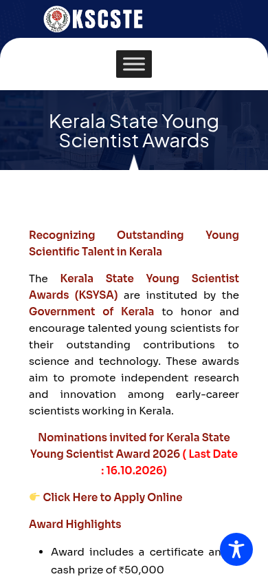

Kerala State Young Scientist Award 2026: ₹50,000 and a gold medal, nominations by 16 October
The Kerala State Council for Science, Technology and Environment (KSCSTE) has invited nominations for the Kerala State Young Scientist Award 2026. Each winner gets a cash award of ₹50,000, a certificate and the Chief Minister's Gold Medal. The last date for online nominations is 16 October 2026.
Official publisher logo hosted by its publisher. Official source. Independent guide, not affiliated or sponsored. Artwork and trademarks belong to their owners.
Update: nominations for 2026 are closed
Checked 19 October 2026: the official KSCSTE page still shows the call for the Kerala State Young Scientist Award 2026 with the last date 16 October 2026, which has passed. New nominations for this cycle are no longer possible. Two points from the official nomination rules still matter: self-nominations are not accepted, and once submitted, a nomination stays valid for 3 years or until the nominee crosses the age limit - so people already nominated remain in consideration. This guide is kept for reference.

What do winners get?
- Cash award: ₹50,000
- Certificate and the Chief Minister's Gold Medal
- A research grant, which the Council may consider after an expert committee reviews the project, and a travel grant for presenting at a conference abroad. The 2025 guidelines describe consideration for overseas conference travel within 3 years of receiving the award. Both grants are subject to the Council's conditions
Who is it for?
The Kerala government notice says Indian citizens doing research in science and technology in Kerala can be nominated, in 14 categories, and must not be older than 37 on 31 December. The 2025 guidelines add a PhD with 3 years of post-doctoral experience, and continuous work at an R&D or academic institution in Kerala for the last 3 years. The number of awards is limited to 14 a year and awards are not shared.
The 14 subject areas (2025 guidelines)
Mathematical sciences, physics, chemical sciences, earth and planetary sciences, engineering sciences and technology, materials science, plant sciences, animal sciences, microbiology and immunology, cell and biomolecular sciences, health sciences, agricultural sciences and forestry, science teaching and education, and regional science and science policy.
How it works
- The nominator submits the nomination online on the KSCSTE website (kscste.kerala.gov.in) with the supporting documents, by 16 October 2026.
- A screening committee shortlists candidates, who are invited to present their research.
- Selected candidates are informed individually by mail.
- Awards are presented by the Chief Minister at the inaugural session of the Kerala Science Congress, where awardees present their work (per the 2025 guidelines).
A careful checklist
- Open the award page and guidelines only from kscste.kerala.gov.in.
- Check the 2026 age cutoff, qualification and Kerala work history. Do not reuse the birth-date cutoff from the 2025 PDF for a 2026 nomination.
- Ask your head of institution or another eligible nominator now, since the deadline is close.
- Incomplete or late nominations are not considered, per the guidelines.
We read the Kerala PRD notice dated 24 September 2026 and the 2025 KSCSTE guidelines on 13 October 2026. We did not open the 2026 online form.
What changed since this post?
The Kerala I&PRD notice dated 24 September 2026 was rechecked on 13 October 2026. It gives 16 October as the last date, 14 categories, a maximum age of 37 on 31 December and the ₹50,000 award package. Detailed nomination and experience rules here remain labelled as the 2025 edition; a 2026 guidelines PDF was not found. The online form was not opened or tested. No government emblem or unverified logo is used.
Sources: Kerala I&PRD notice (Malayalam), 24 Sep 2026, KSCSTE guidelines PDF (2025 edition), KSCSTE award page. Checked 13 October 2026; closure verified on the official page on 19 October 2026. This is an AiCoN explainer, not a government publication.